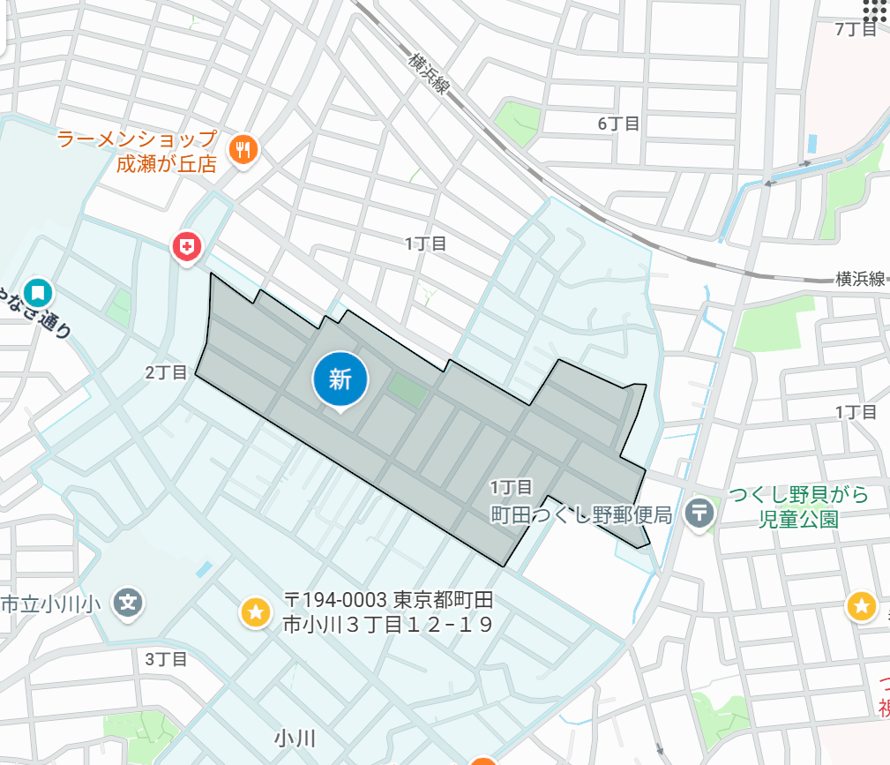

建築協約・対象区域
地図の黒枠内が対象区域です。境界付近や敷地が境界をまたぐ場合は、会にご相談ください。
添付の対象区域図を表示

地図を押して敷地のおよその位置を確認できます。
建築承認願い
会への提出窓口です。市役所での建築確認等のお手続きは、所定の窓口で行ってください。
小川１・２丁目地区環境を守る会
町田市小川１・２丁目の対象区域で建築を計画される方へ
地図の黒枠内が対象区域です。境界付近や敷地が境界をまたぐ場合は、会にご相談ください。

地図を押して敷地のおよその位置を確認できます。
会への提出窓口です。市役所での建築確認等のお手続きは、所定の窓口で行ってください。